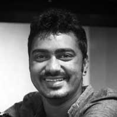

Our Team
We are musicians, recording engineers, sound designers, paranormal activity enthusiasts and big foodies.
A li’l background on who we are and why we do what we do
-
Anindit Roy
An accomplished guitarist, he has played with numerous bands over the years, Naireet, Ee Teez and Jihaad, to name a few. Music, serving as a medium, his interest gradually shifted to the art of Film making and Audio Post Production for films.
An SRFTI (Satyajit Ray Film and Television Institute) alumni, he received the 62nd National Film Award for best sound design for the documentary “Tender is the Sight”. Also, worked at Yash Raj Films Studios as an assistant Film Mix Engineer.
He has worked with eminent directors - Kaushik Ganguly, Srijit Mukherjee, Shiboprasad Mukherjee, Nandita Ray, Ali Abbas Zafar (Gunday), Habib Faisal (Daawat -e-Ishq), Pradeep Sarkar (Mardaani), Shaad Ali (Kill Dil).
Now he is a part of Aural Workstation as a Mix Engineer chiefly.
-
 Adeep Singh Manki
Always had a keen interest in the technical aspect of a musical experience, which led him to pursue a degree in audio production from SAE (School of Audio Engineering), Byron Bay, Australia.
Over time, the process of Audio Post Production for Film grew on him, working with directors - Aparna Sen, Suman Mukhopadhyay, Anjan Dutt, Birsa Dasgupta.
After which he devoted his efforts to exploring another facet of Film Sound - Sync Sound. He has assisted on the sets of Piku (2015) and Bajirao Mastani (2016).
He is now a part of Aural Workstation as a Sound Designer primarily.
-

Annreeju Ray
A student of guitarist, composer and producer Amyt Datta, he is a prolific guitarist himself, having been a part of bands like Hyphen, Nastik.
After completing his Bachelor’s in Aeronautical Engineering, he found his calling as a sound engineer and has been learning on the job ever since.
Currently working at Aural Workstation as a Recording Engineer/ Sound Post Asst. Engineer.
-
Arghya Chakraborty
A skilled mis-communicator, able to maintain cultural insensitivity, destroy rapport with members of diverse groups, and promote team chaos (yes you read that right!). The “funny man” of the team, he is the go-to guy for all administrative requirements, a natural problem solver and can hold a conversation about pretty much anything under the sun.
Has been exposed to varied music from a very young age, eventually picked up the guitar in his teens and still considers himself a student of music. Apart from that he is a song writer, horror film aficionado and a video game enthusiast.